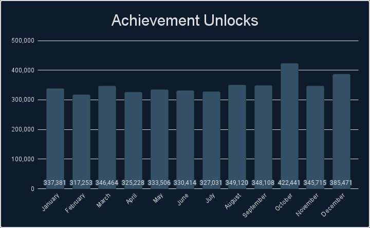
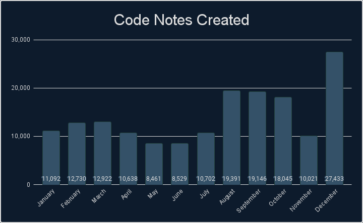
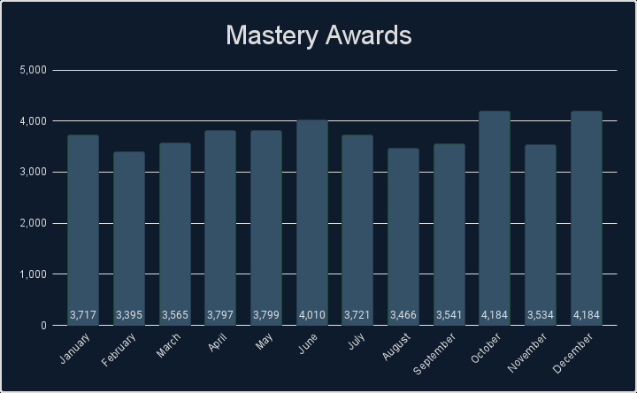
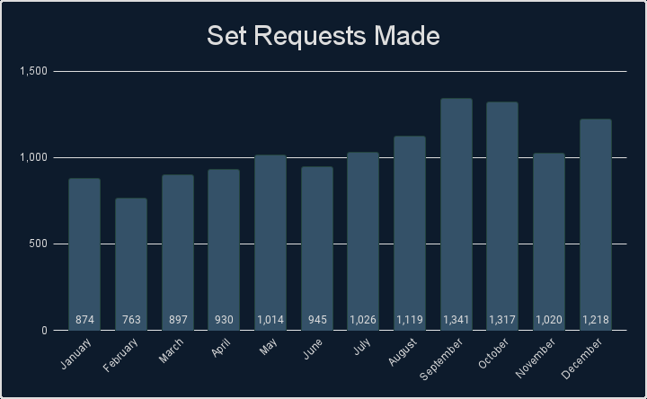
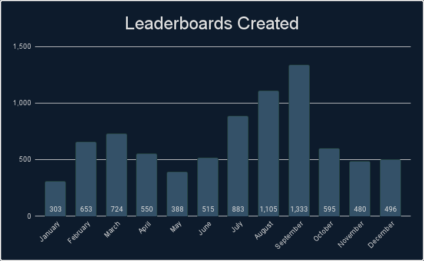

Intro
If you like looking at stats and data, then you have come to the right place. We’ve gathered tons of stats from 2021 that cover a wide range of measurable aspects that RetroAchievements offer. Check out what the community has accomplished.
General Stats
Check out some general stats from this year.
| Number of sets released. |
1,060 |
| Number of achievements released. |
49,373 |
| Number of hardcore achievements earned. |
4,168,132 |
| Number of code notes created. |
169,110 |
| Number of mastery awards awarded. |
44,913 |
| Number of set requests made. |
12,464 |
| Number of leaderboards created. |
8,025 |
| Number of leaderboard entries submitted. |
264,574 |
| Number of users who have earned at least 1 hardcore achievement. |
24,989 |
| Number of total hardcore points earned by players. |
58,128,440 |
| Number of total hardcore retro points earned by players. |
171,350,530 |
| Number of user accounts created. |
59,594 |
| Number of new user accounts reaching >=500 points. |
7,772 |
Achievements Created
Monthly Breakdown

Console Breakdown
| Console | Achievements |
|---|
| 32X | 160 |
| 3DO Interactive Multiplayer | 101 |
| Apple II | 142 |
| Arcade | 1,218 |
| Atari 2600 | 377 |
| Atari 7800 | 66 |
| Atari Jaguar | 59 |
| Atari Lynx | 20 |
| ColecoVision | 87 |
| Game Boy | 1,864 |
| Game Boy Advance | 4,264 |
| Game Boy Color | 1,575 |
| Game Gear | 574 |
| Intellivision | 143 |
| Magnavox Odyssey 2 | 33 |
| Master System | 155 |
| Mega Drive | 3,299 |
| MSX | 315 |
| Console | Achievements |
|---|
| Neo Geo Pocket | 212 |
| NES | 2,618 |
| Nintendo 64 | 2,894 |
| Nintendo DS | 6,690 |
| PC Engine | 1,163 |
| PC-8000/8800 | 193 |
| PC-FX | 82 |
| PlayStation | 7,023 |
| PlayStation Portable | 6,979 |
| Pokemon Mini | 138 |
| Saturn | 874 |
| Sega CD | 410 |
| SG-1000 | 133 |
| SNES | 4,038 |
| Vectrex | 96 |
| Virtual Boy | 154 |
| Watara Supervision | 756 |
| WonderSwan | 468 |
Top 25 Achievement Creators
Check out the top 25 achievement creators this year, how many achievements they created and what console they created the most achievements for.
| Rank |
Developer |
Achievements |
Favorite Console |
| 1 |
 voiceofautumn voiceofautumn |
3,157 |
Game Boy Advance |
| 2 |
 Snow Snow |
2,461 |
PlayStation Portable |
| 3 |
 SporyTike SporyTike |
2,287 |
Nintendo DS |
| 4 |
 AlexGatao AlexGatao |
1,736 |
SNES |
| 5 |
 guindev guindev |
1,578 |
PC Engine |
| 6 |
 blendedsea blendedsea |
1,461 |
PlayStation Portable |
| 7 |
 wilhitewarrior wilhitewarrior |
1,431 |
NES |
| 8 |
 pinguupinguu pinguupinguu |
1,379 |
Nintendo DS |
| 9 |
 tatoonie tatoonie |
1,340 |
PlayStation |
| 10 |
 televandalist televandalist |
1,174 |
PlayStation Portable |
| 11 |
 MGNS8M MGNS8M |
1,169 |
PlayStation Portable |
| 12 |
 Delmaru Delmaru |
1,074 |
Nintendo DS |
| 13 |
 SlashTangent SlashTangent |
1,033 |
PlayStation Portable |
| 14 |
 TeddyWestside TeddyWestside |
1,031 |
PlayStation |
| 15 |
 lordpsycho lordpsycho |
992 |
PlayStation Portable |
| 16 |
 hardt hardt |
911 |
PC Engine |
| 17 |
 BrunoKiko BrunoKiko |
758 |
PlayStation |
| 18 |
 NgNvNn NgNvNn |
705 |
PlayStation |
| 19 |
 stfN1337 stfN1337 |
653 |
SNES |
| 20 |
 zxmega zxmega |
637 |
Mega Drive |
| 21 |
 KingS1zzle KingS1zzle |
596 |
PlayStation Portable |
| 22 |
 MarioJunior10 MarioJunior10 |
595 |
PC Engine |
| 23 |
 raniejogos raniejogos |
589 |
Mega Drive |
| 24 |
 mopain85 mopain85 |
569 |
Nintendo 64 |
| 25 |
 Pebete Pebete |
513 |
PlayStation |
Top 25 Developers
Check out some stats regarding unlocks and points awarded by the developers. Included is the number of unlocks, points and retro points awarded to the players. This data includes all achievements but only counts unlocks during 2021. Bolded rows indicate active developers.
| Rank |
Developer |
Unlocks Awarded |
Points Awarded |
Retro Points Awarded |
| 1 |
 Brian Brian |
150,987 |
2,304,602 |
7,886,604 |
| 2 |
 Salsa Salsa |
127,988 |
2,008,570 |
7,275,634 |
| 3 |
SporyTike |
122,918 |
1,447,694 |
4,634,326 |
| 4 |
 dude1286 dude1286 |
104,065 |
1,820,320 |
4,126,734 |
| 5 |
televandalist |
98,383 |
1,495,008 |
5,466,314 |
| 6 |
stfN1337 |
85,443 |
1,313,692 |
2,163,146 |
| 7 |
 matheus2653 matheus2653 |
78,253 |
1,276,792 |
3,695,130 |
| 8 |
 Dexterspet Dexterspet |
76,945 |
978,470 |
2,586,020 |
| 9 |
 Jaarl Jaarl |
73,867 |
1,056,408 |
2,528,688 |
| 10 |
Snow |
66,873 |
701,226 |
2,167,772 |
| 11 |
 jplima jplima |
66,654 |
1,267,540 |
3,934,888 |
| 12 |
 Rewsifer Rewsifer |
65,787 |
721,880 |
1,323,696 |
| 13 |
 Blazekickn Blazekickn |
65,680 |
697,448 |
3,571,782 |
| 14 |
 Scott Scott |
65,110 |
703,456 |
1,664,918 |
| 15 |
MGNS8M |
63,335 |
903,884 |
3,031,792 |
| 16 |
 Altomar Altomar |
60,797 |
780,374 |
1,883,986 |
| 17 |
 SherryBirkin SherryBirkin |
55,482 |
769,554 |
1,545,938 |
| 18 |
 Totaya Totaya |
51,749 |
860,846 |
1,722,192 |
| 19 |
BrunoKiko |
51,055 |
602,354 |
1,261,994 |
| 20 |
Delmaru |
50,642 |
662,382 |
1,561,732 |
| 21 |
hardt |
47,859 |
558,856 |
1,617,554 |
| 22 |
 Dissection Dissection |
47,606 |
772,090 |
1,583,076 |
| 23 |
 mickyt888 mickyt888 |
47,375 |
672,894 |
1,691,512 |
| 24 |
 Shmelyoff Shmelyoff |
45,497 |
670,232 |
3,100,644 |
| 25 |
 salvadorc17 salvadorc17 |
44,930 |
663,882 |
1,274,122 |
* Hardcore only
Achievement Unlocks
Monthly Breakdown

Console Breakdown
| Console | Unlocks |
|---|
| 32X | 1,793 |
| 3DO Interactive Multiplayer | 4,102 |
| Apple II | 1,330 |
| Arcade | 128,867 |
| Atari 2600 | 53,956 |
| Atari 7800 | 2,664 |
| Atari Jaguar | 319 |
| Atari Lynx | 1,923 |
| ColecoVision | 1,922 |
| Events | 3,766 |
| Game Boy | 234,037 |
| Game Boy Advance | 483,356 |
| Game Boy Color | 122,578 |
| Game Gear | 24,233 |
| Intellivision | 1,369 |
| Magnavox Odyssey 2 | 732 |
| Master System | 37,522 |
| Mega Drive | 278,350 |
| MSX | 1,886 |
| Console | Unlocks |
|---|
| Neo Geo Pocket | 7,071 |
| NES | 579,624 |
| Nintendo 64 | 290,315 |
| Nintendo DS | 185,098 |
| PC Engine | 61,693 |
| PC-8000/8800 | 1,486 |
| PC-FX | 302 |
| PlayStation | 666,027 |
| PlayStation Portable | 73,816 |
| Pokemon Mini | 8,772 |
| Saturn | 20,113 |
| Sega CD | 10,729 |
| SG-1000 | 2,284 |
| SNES | 862,029 |
| Vectrex | 584 |
| Virtual Boy | 3,204 |
| Watara Supervision | 7,834 |
| WonderSwan | 2,446 |
Top 25 Users
Check out who has the most achievement unlocks, points, retro points, and mastery awards earned this year.
| Rank |
User |
Achievements |
Points |
Retro Points |
Mastery Awards |
| 1 |
 Infernum Infernum |
11,332 |
205,774 |
733,018 |
424 |
| 2 |
 guineu guineu |
10,475 |
143,948 |
374,806 |
354 |
| 3 |
Blazekickn |
8,786 |
115,322 |
238,344 |
289 |
| 4 |
 Kinglink Kinglink |
8,716 |
79,936 |
109,926 |
34 |
| 5 |
 Retrokaiser Retrokaiser |
8,360 |
89,388 |
177,798 |
156 |
| 6 |
 freezestar freezestar |
8,094 |
102,788 |
192,022 |
195 |
| 7 |
 JigokuNoBanken JigokuNoBanken |
7,576 |
104,170 |
232,646 |
63 |
| 8 |
 Pudpod Pudpod |
7,530 |
96,050 |
190,606 |
95 |
| 9 |
 ShadwSonic ShadwSonic |
7,267 |
98,594 |
199,564 |
199 |
| 10 |
 CobaltZeroni CobaltZeroni |
7,082 |
87,756 |
174,350 |
75 |
| 11 |
 FireSonic FireSonic |
6,958 |
96,868 |
232,056 |
174 |
| 12 |
 Andrey199650 Andrey199650 |
6,843 |
108,578 |
262,200 |
180 |
| 13 |
 chocolatiel chocolatiel |
6,628 |
93,292 |
256,338 |
93 |
| 14 |
 xTyrea64 xTyrea64 |
6,581 |
108,552 |
305,690 |
93 |
| 15 |
 TheLooseGroose TheLooseGroose |
6,307 |
92,346 |
337,170 |
180 |
| 16 |
 AmericanNinja AmericanNinja |
6,251 |
95,860 |
285,198 |
35 |
| 17 |
 Bendyhuman Bendyhuman |
6,247 |
80,022 |
153,924 |
258 |
| 18 |
 Arekdias Arekdias |
6,145 |
117,322 |
548,498 |
72 |
| 19 |
 minibt minibt |
6,109 |
84,952 |
184,826 |
139 |
| 20 |
 Olafur Olafur |
5,973 |
98,232 |
324,496 |
105 |
| 21 |
 HolyShinx HolyShinx |
5,872 |
89,648 |
207,422 |
190 |
| 22 |
 ChronoGear ChronoGear |
5,853 |
103,230 |
489,366 |
118 |
| 23 |
 Zio Zio |
5,798 |
115,704 |
499,894 |
118 |
| 24 |
 Sarconius Sarconius |
5,609 |
107,972 |
107,972 |
167 |
| 25 |
 Grahamtams Grahamtams |
5,575 |
84,302 |
235,922 |
50 |
Top 10 Awarded Achievements
Check out which achievements were earned the most this year.
* Hardcore only
Code Notes
Monthly Breakdown

Console Breakdown
| Console | Notes |
|---|
| 32X | 163 |
| 3DO Interactive Multiplayer | 259 |
| Apple II | 395 |
| Arcade | 1,875 |
| Atari 2600 | 569 |
| Atari 7800 | 280 |
| Atari Jaguar | 103 |
| Atari Lynx | 39 |
| ColecoVision | 207 |
| Dreamcast | 2,882 |
| Game Boy | 3,755 |
| Game Boy Advance | 12,002 |
| Game Boy Color | 4,787 |
| Game Gear | 1,639 |
| Intellivision | 397 |
| Magnavox Odyssey 2 | 34 |
| Master System | 508 |
| Mega Drive | 5,706 |
| MSX | 446 |
| Console | Notes |
|---|
| Neo Geo Pocket | 832 |
| NES | 5,785 |
| Nintendo 64 | 7,712 |
| Nintendo DS | 29,566 |
| PC Engine | 1,921 |
| PC-8000/8800 | 316 |
| PC-FX | 84 |
| PlayStation | 31,722 |
| PlayStation Portable | 39,358 |
| Pokemon Mini | 186 |
| Saturn | 1,682 |
| Sega CD | 997 |
| SG-1000 | 151 |
| SNES | 9,856 |
| Vectrex | 138 |
| Virtual Boy | 332 |
| Watara Supervision | 1,261 |
| WonderSwan | 945 |
Top 10 Code Note Creators
Check out which developers created the most code notes this year.
Mastery Awards
Monthly Breakdown

Console Breakdown
| Console | Awards |
|---|
| 32X | 28 |
| 3DO Interactive Multiplayer | 76 |
| Apple II | 45 |
| Arcade | 653 |
| Atari 2600 | 1,884 |
| Atari 7800 | 62 |
| Atari Jaguar | 7 |
| Atari Lynx | 38 |
| ColecoVision | 106 |
| Events | 382 |
| Game Boy | 3,923 |
| Game Boy Advance | 4,345 |
| Game Boy Color | 2,238 |
| Game Gear | 427 |
| Intellivision | 57 |
| Magnavox Odyssey 2 | 39 |
| Master System | 466 |
| Mega Drive | 3,324 |
| MSX | 43 |
| Console | Awards |
|---|
| Neo Geo Pocket | 57 |
| NES | 7,127 |
| Nintendo 64 | 2,656 |
| Nintendo DS | 1,366 |
| PC Engine | 257 |
| PC-8000/8800 | 42 |
| PC-FX | 8 |
| PlayStation | 4,308 |
| PlayStation Portable | 494 |
| Pokemon Mini | 341 |
| Saturn | 208 |
| Sega CD | 87 |
| SG-1000 | 55 |
| SNES | 9,275 |
| Vectrex | 6 |
| Virtual Boy | 46 |
| Watara Supervision | 418 |
| WonderSwan | 19 |
Top 25 Mastery Awards
Top 10 Single Month Masteries
Check out which users had the most single moth mastery awards this year.
Top 10 Mastered Sets
Check out which sets were mastered most this year.
Set Requests
Monthly Breakdown

Console Breakdown
| Console | Requests |
|---|
| 32X | 17 |
| 3DO Interactive Multiplayer | 45 |
| Apple II | 19 |
| Arcade | 518 |
| Atari 2600 | 36 |
| Atari 5200 | 1 |
| Atari 7800 | 4 |
| Atari Jaguar | 7 |
| Atari Lynx | 1 |
| ColecoVision | 6 |
| Commodore 64 | 3 |
| DOS | 34 |
| Dreamcast | 229 |
| Game Boy | 189 |
| Game Boy Advance | 883 |
| Game Boy Color | 225 |
| Game Gear | 64 |
| Intellivision | 9 |
| Magnavox Odyssey 2 | 4 |
| Master System | 128 |
| Mega Drive | 537 |
| MSX | 17 |
| Neo Geo Pocket | 17 |
| Console | Requests |
|---|
| NES | 672 |
| Nintendo 3DS | 3 |
| Nintendo 64 | 649 |
| Nintendo DS | 1,633 |
| Nokia N-Gage | 1 |
| PC Engine | 141 |
| PC-8000/8800 | 4 |
| PC-9800 | 46 |
| PC-FX | 2 |
| Philips CD-i | 2 |
| PlayStation | 2,907 |
| PlayStation Portable | 1,228 |
| Pokemon Mini | 12 |
| Saturn | 232 |
| Sega CD | 119 |
| SG-1000 | 4 |
| SNES | 1,261 |
| Super Cassette Vision | 2 |
| Vectrex | 1 |
| Virtual Boy | 11 |
| Watara Supervision | 10 |
| WonderSwan | 29 |
| Zeebo | 2 |
Leaderboards
Monthly Breakdown

Console Breakdown
| Console | Leaderboards |
|---|
| Apple II | 4 |
| Arcade | 113 |
| Atari 2600 | 69 |
| Atari 7800 | 55 |
| Atari Jaguar | 3 |
| ColecoVision | 12 |
| Dreamcast | 124 |
| Game Boy | 244 |
| Game Boy Advance | 289 |
| Game Boy Color | 231 |
| Game Gear | 31 |
| Intellivision | 29 |
| Magnavox Odyssey 2 | 4 |
| Master System | 22 |
| Mega Drive | 671 |
| MSX | 68 |
| NES | 287 |
| Console | Leaderboards |
|---|
| Nintendo 64 | 1,010 |
| Nintendo DS | 1,304 |
| PC Engine | 83 |
| PC-8000/8800 | 4 |
| PC-FX | 1 |
| PlayStation | 647 |
| PlayStation Portable | 1,511 |
| Pokemon Mini | 43 |
| Saturn | 33 |
| Sega CD | 8 |
| SG-1000 | 10 |
| SNES | 759 |
| Vectrex | 6 |
| Virtual Boy | 11 |
| Watara Supervision | 185 |
| WonderSwan | 24 |
Top 10 Leaderboard Creators
Check out which developers created the most leaderboards this year.
 By
MrOwnership
By
MrOwnership
 Super Mario World (SNES)
Super Mario World (SNES) Super Mario Bros. (NES)
Super Mario Bros. (NES) Donkey Kong Country (SNES)
Donkey Kong Country (SNES) Super Mario 64 (Nintendo 64)
Super Mario 64 (Nintendo 64) Sonic the Hedgehog (Mega Drive)
Sonic the Hedgehog (Mega Drive) Alfex
Alfex YahwehTzVaoth
YahwehTzVaoth mikeisafighter
mikeisafighter Xotoco
Xotoco AuburnRDM
AuburnRDM BlotchJBMR
BlotchJBMR Xymjak
Xymjak DUT
DUT Jungon
Jungon WanderingHeiho
WanderingHeiho adamjohnny5
adamjohnny5 MaddieKittyTV
MaddieKittyTV AxelViex
AxelViex


 GalacticSpear
GalacticSpear BahamutVoid
BahamutVoid Bartis1989
Bartis1989 valts
valts